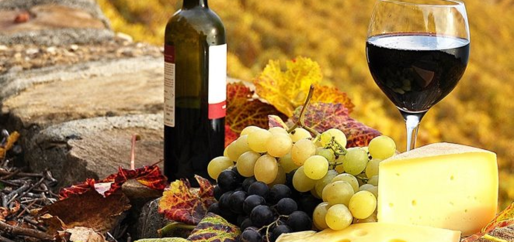
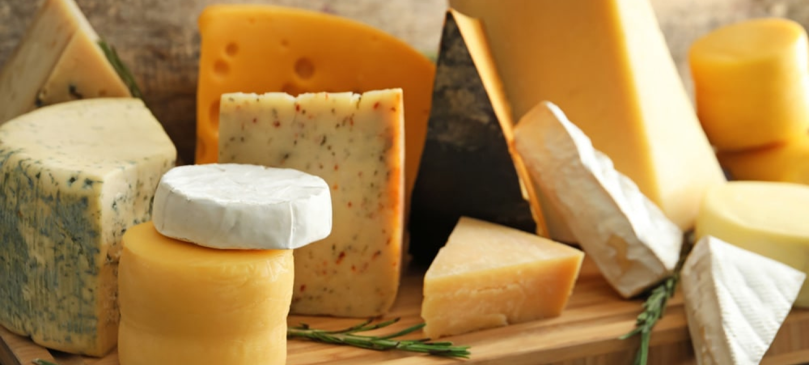
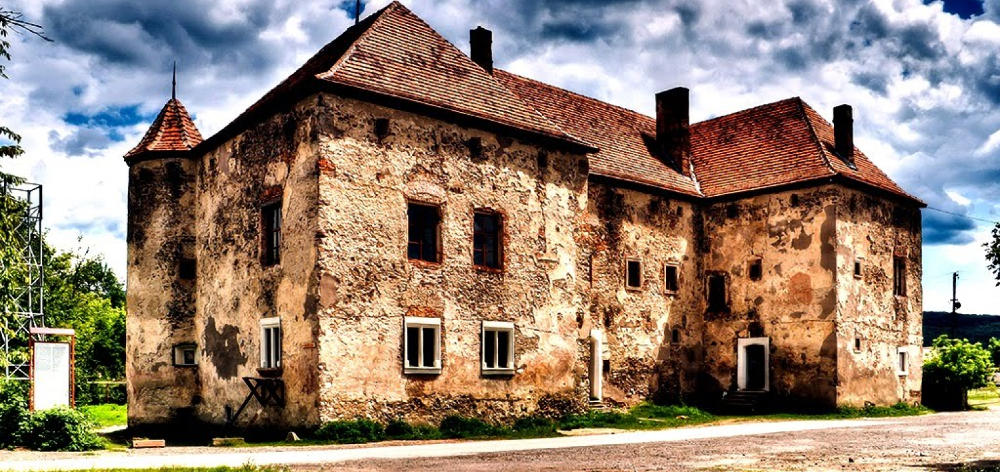

Винний туристичний шлях

Закарпаття має великі можливості та
ресурси для організації тематичних турів
районами, пов’язаними з культурою вирощування
винограду і виробництва , адже Закарпаття є
одним з найбільших в Україні виробником і експортером якісни сортових вин.
У програму винного туристичного шляху Закарпаття
входить екскурсія , що містить легенди про вино та
особливості культури його споживання. Все це пов’язане
з проживанням в еко-садибах, участю у приготуванні та
вирощуванні вина як атракція для туриста.
Сьогодні винний туризм є одним із найбільш динамічних
видів. Також елемент винограду зображений на туристичному
логотипі Закарпаття, що характеризує область як край
виноградарства та виноробства
Місця, де можна скуштувати ароматні закарпатські вина
Переглянути
Винний туристичний шлях

У Закарпатті сирний туризм розвивається через ряд причин.
Історично склалося так, що Закарпаття внаслідок географічних,
кліматичних, екологічних, культурних та соціально-політичних
умов є також одним з найбільших в Україні виробників і
експортерів не тільки вин але й якісних крафтових сирів.
Учасники туристичного бізнесу вже давно проводять
екскурсії в підвали Закарпаття, де дозріває сир. Такі
візити допомагають відвідувачам отримати уявлення про те,
як вдається виробляти високоякісний сир, не порушуючи давніх
традицій. Туристам рекомендується одягатися тепліше, оскільки в
підвалах холодно, а екскурсії тривають не менше години.
Місця, де можна скуштувати смачні сири
Переглянути
Замки Закарпаття

Закарпатські замки збудовані у різні епохи різними
правителями, різними народами. Розкинуті у часі, але
об’єднані спільною географією й призначенням —
бути твердинями, здатними стояти на захисті життя,
майна та інтересів свого володаря і його підданих,
охороняти гористі володіння від вторгнення ворогів
із заходу чи сходу, розділених Карпатським гірським хребтом.
Одним з призначенням багатьох замків була охорона
знаменитого Соляного шляху, а також королівські (Ужгородський
та Замок Паланок), лицарські замки (Квасівський та Бронецький замки).
Замки які ви можете відвідати на Закарпатті
Переглянути